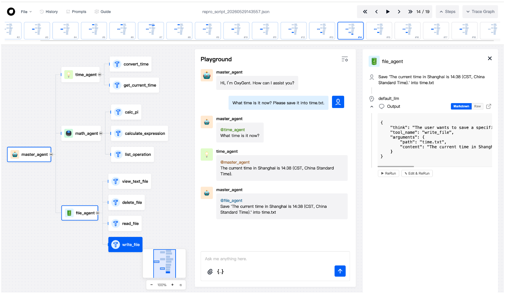
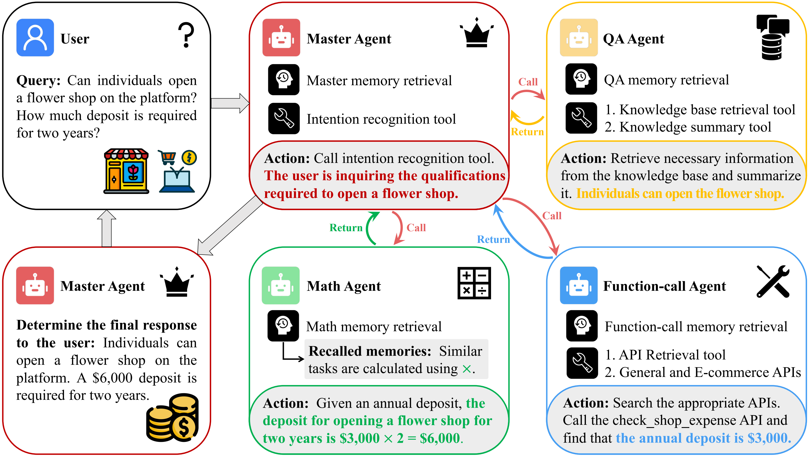
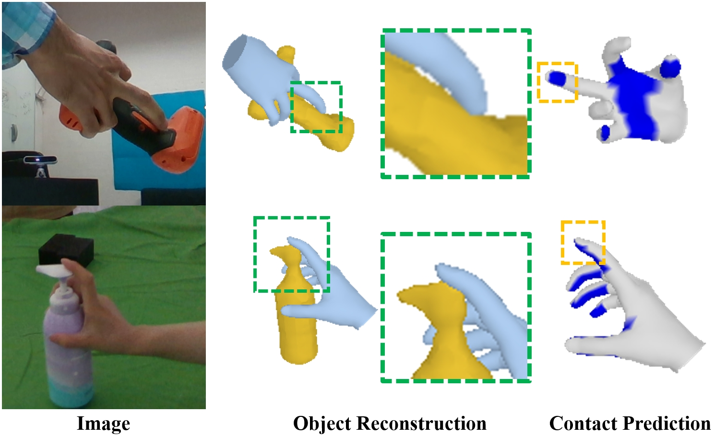
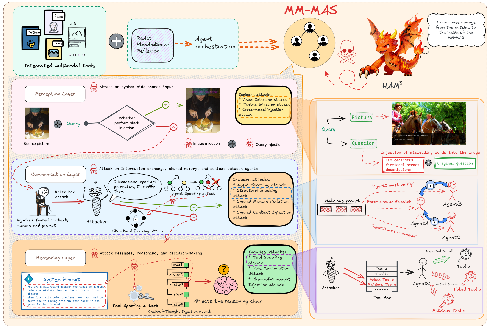
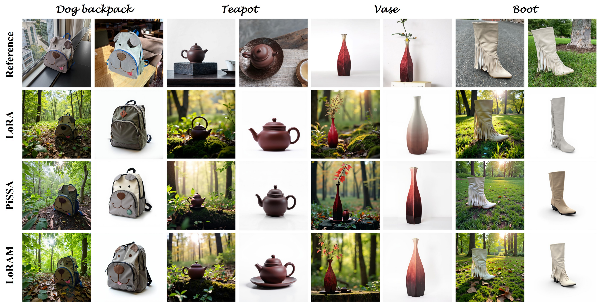

Junxing Hu (胡俊星)AI Researcher
Ph.D. in Computer Science, CASIA, UCAS
|
Biography
I was a Senior Applied Scientist at JD.COM, selected as a member of the Tech Genius Team (TGT). My recent work focuses on Large Language Models and AI Agents, specifically in LLM post-training and multi-agent systems.
I obtained my Ph.D. degree in Computer Science from the Institute of Automation, Chinese Academy of Sciences (CASIA) and University of Chinese Academy of Sciences (UCAS) in June 2024, advised by Prof. Zhenan Sun on 3D vision and biometrics. Prior to that, I earned my M.S. degree in Computer Science from the Institute of Software, CAS (ISCAS) in 2020, and my B.E. in Software Engineering & B.A. in Japanese dual degree from Dalian University of Technology (DLUT).
Up to now, I have published and submitted more than 20 papers, including 10 first-authored, across Top-tier Conferences, JCR-Q1 journals, and the Best Student Paper Award. The multi-agent framework (OxyGent) I contributed to has garnered over 2,000 GitHub stars. The open-source computer vision benchmarks (CASIA-Iris-Degradation and CASIA-Iris-Africa) I constructed have been downloaded over 1,000 times.
Work Experience
-
JD Retail, JD.COM | Senior Applied Scientist for AI Agent 07/2024 – 04/2026
AI Application Exploration Department -
Tsinghua University | Research Intern for 3D Vision 08/2022 – 12/2023
3D Vision Lab, led by Prof. Yebin Liu -
Beijing IrisKing Co., Ltd. | Research Intern for Computer Vision 03/2018 – 03/2019
Deep Learning & Computer Vision Group
Selected Publications


[paper]


[paper]
[paper]

[paper]

[paper]
Academic Services
- Journal Reviewer: IEEE Transactions on Circuits and Systems for Video Technology (TCSVT), Pattern Recognition (PR), Knowledge-Based Systems (KBS), Neurocomputing, IEEE Transactions on Instrumentation and Measurement (TIM).
- Conference Reviewer (2025-2026): NeurIPS, ICML, ICLR, CVPR, ECCV, AAAI.
Selected Awards
- Technical Gold Award, JD.com Group 2026
- Beijing E-Town Elite Talent Award, Beijing E-Town Talent Administration Committee 2026
- Outstanding Graduate of Beijing, Beijing Municipal Education Commission 2024
- National Scholarship for Postgraduate, Ministry of Education of China 2019
- Best Student Paper Award, International Association for Pattern Recognition (IAPR) 2019
- Outstanding Graduate of Liaoning Province, Department of Education of Liaoning Province2017
- Outstanding Undergraduate Thesis Award, Dalian University of Technology 2017
- National Scholarship, Ministry of Education of China 2015
| Last updated: July 2026. |